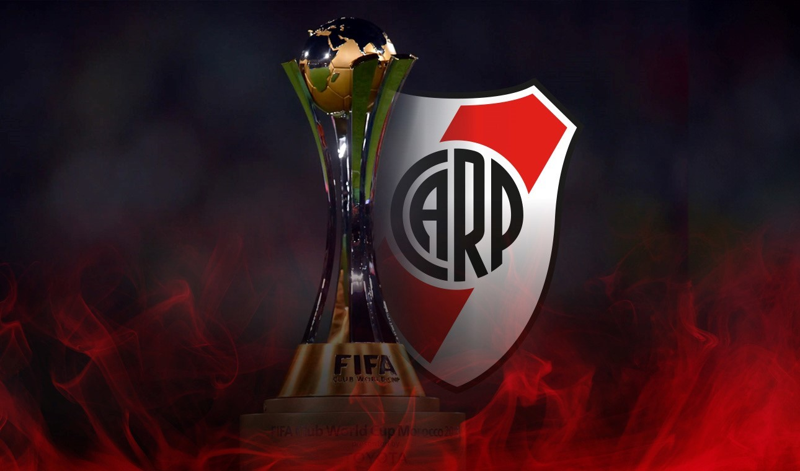
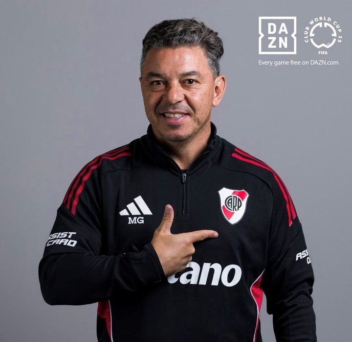
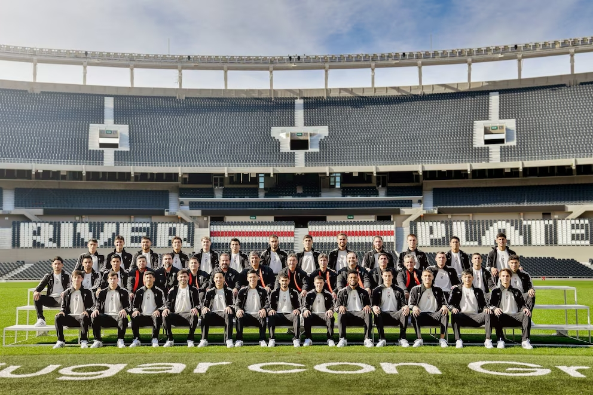
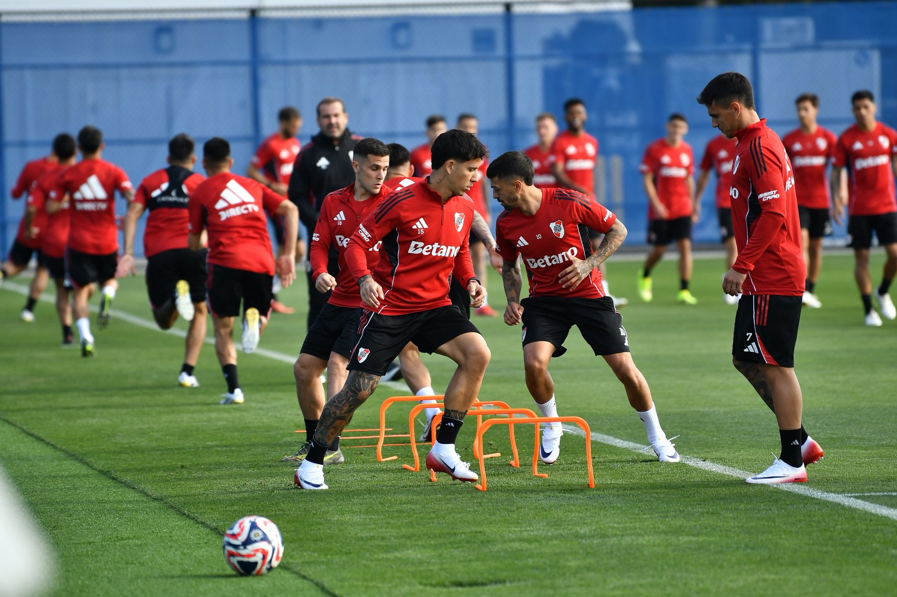
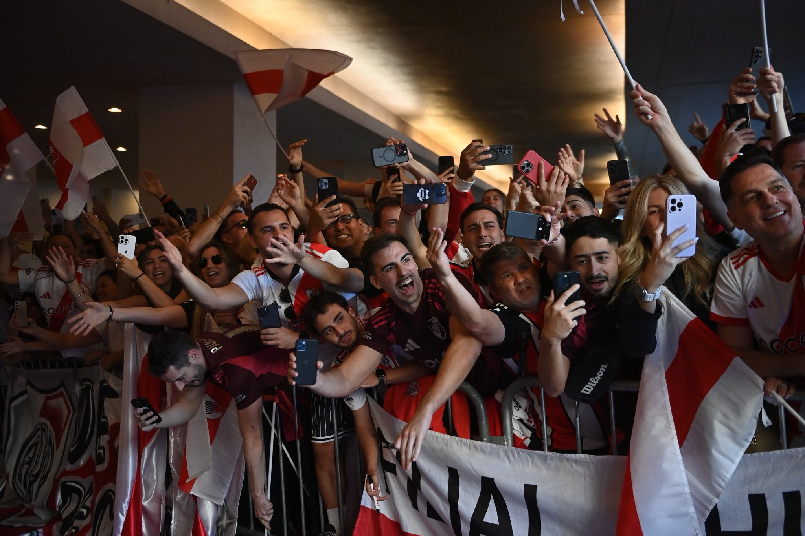

Luego de una destacada campaña en la Copa Libertadores, River Plate logró su clasificación al nuevo Mundial de Clubes 2025 organizado por la FIFA en todo Estados Unidos. Con Marcelo Gallardo nuevamente como director técnico, el club de Núñez afronta este reto con la ambición que lo caracteriza.
El torneo reunirá a 32 equipos de todo el mundo en un formato similar al de la Copa del Mundo de selecciones. River compartirá grupo en la fase inicial con Urawa Red Diamonds(japón), Rayados de Monterrey(México), y el subcampeón de la Champions League, Inter de Milán(Italia).
De cara al Mundial, el equipo realizó una preparación intensiva en el predio de Ezeiza. Se combinaron trabajos físicos de alta exigencia y ejercicios tácticos. El cuerpo técnico puso el foco en recuperar la solidez defensiva y mejorar la efectividad en los últimos metros.
La ilusión de competir con los mejores del mundo motiva tanto a jugadores como a los hinchas. Es así que llevarán a miles de hinchas a la sede mas alejada que podía haber, la cual es Seattle. El club apuesta a dejar una huella en este histórico torneo y demostrar que el fútbol sudamericano puede pelear mano a mano con las potencias europeas.




🎥 De Buenos Aires a Seattle, River en modo @FIFACWC 🌎⚽️#FIFACWC | #RiverMundial 🤍❤️🤍 pic.twitter.com/IjhuHxuibc
— River Plate (@RiverPlate) June 12, 2025